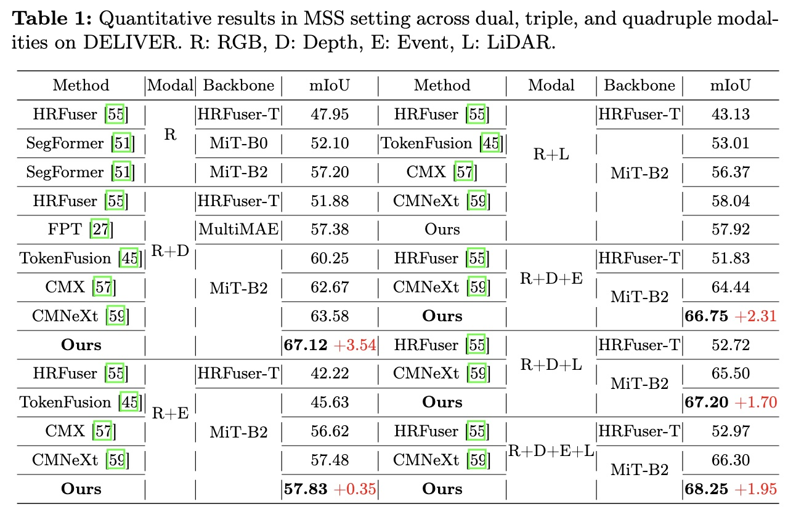

Centering the Value of Every Modality: Towards Efficient and Resilient Modality-agnostic Semantic Segmentation
ECCV 2024
-

Xu Zheng
AI Thrust, HKUST(GZ)
-

Yuanhuiyi Lyu
AI Thrust, HKUST(GZ)
-

Addison Lin Wang
AI & CMA Thrust, HKUST(GZ)
Dept. of CSE, HKUST

Abstract
Image modality is not perfect as it often fails in certain conditions, \eg, night and fast motion. This significantly limits the robustness and versatility of existing multi-modal (\ie, Image+X) semantic segmentation methods when confronting modality absence or failure, as often occurred in real-world applications. Inspired by the open-world learning capability of multi-modal vision-language models (MVLMs), we explore a new direction in learning the modality-agnostic representation via knowledge distillation (KD) from MVLMs. Intuitively, we propose \textbf{\textit{Any2Seg}}, a novel framework that can achieve robust segmentation from \textbf{\textit{any}} combination of modalities in \textbf{\textit{any}} visual conditions. Specifically, we first introduce a novel language-guided semantic correlation distillation (\textbf{LSCD}) module to transfer both inter-modal and intra-modal semantic knowledge in the embedding space from MVLMs, \eg, LanguageBind~\cite{zhu2023languagebind}. This enables us to minimize the modality gap and alleviate semantic ambiguity to combine any modalities in any visual conditions. Then, we introduce a modality-agnostic feature fusion (\textbf{MFF}) module that reweights the multi-modal features based on the inter-modal correlation and selects the fine-grained feature. This way, our Any2Seg finally yields an optimal modality-agnostic representation. Extensive experiments on two benchmarks with four modalities demonstrate that Any2Seg achieves the state-of-the-art under the multi-modal setting (\textbf{+3.54} mIoU) and excels in the challenging modality-incomplete setting(\textbf{+19.79} mIoU).
Demo Video
Here is a demo video for the proposed MAGIC.
Overall framework of our MAGIC
Overall framework of our Any2Seg framework.

Results
Visualization of arbitrary inputs using {RGB, Depth, Event, LiDAR} on DELIVER.
BibTeX
@article{zheng2024MAGIC,
title={Centering the Value of Every Modality: Towards Efficient and Resilient Modality-agnostic Semantic Segmentation},
author={Zheng, Xu and Lyu, Yuanhuiyi and Zhou, Jiazhou and Wang, Lin},
journal={ECCV},
year={2024}
}